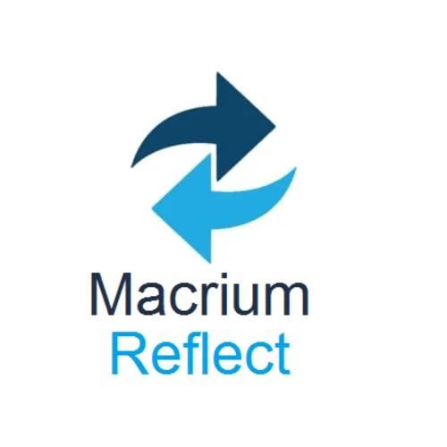
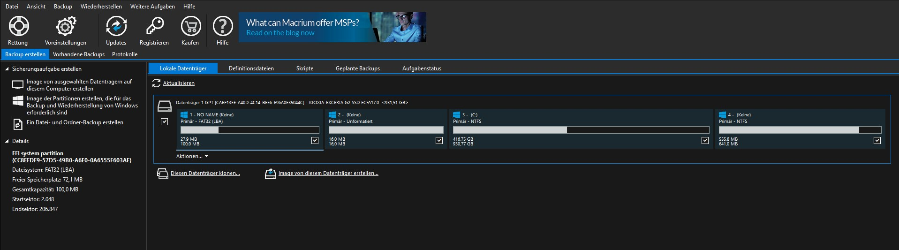

Macrium Reflect ist eine Backup- und Imaging-Software für Windows-Betriebssysteme.
Es gibt eine kostenlose Version namens "Macrium Reflect Free Edition",
die viele grundlegende Funktionen für die Sicherung und Wiederherstellung oder auch Klonen von Daten bietet.
Image-basierte Backups
Macrium Reflect erstellt komplette Abbilder (Images) von Festplatten,
Partitionen oder bestimmten Dateien.
Diese Abbilder können zur
schnellen Wiederherstellung des Systems oder bestimmter Daten
verwendet werden.

Wiederherstellungsoptionen
Macrium Reflect ermöglicht die Wiederherstellung des gesamten Systems,
einzelner Partitionen oder ausgewählter Dateien aus einem Backup.
Dies ist
besonders nützlich,
wenn du nur bestimmte Daten oder Einstellungen wiederherstellen möchtest.
SSD-Optimierung
Die Software ist für den Einsatz mit SSDs optimiert und bietet Funktionen wie "Trim-Unterstützung"
(falls nicht bekannt bitte danach recherchieren), um die Leistung von SSDs zu verbessern.
Benutzerfreundliche Oberfläche
Benutzeroberfläche von Macrium Reflect ist intuitiv gestaltet und
bietet eine einfache Navigation durch die verschiedenen Funktionen, wie Sie hier sehen können:

Es ist wichtig zu beachten, dass die kostenlose Version bestimmte fortgeschrittene Funktionen der
kostenpflichtigen Versionen möglicherweise nicht enthält.
Wenn du jedoch grundlegende Backup-Anforderungen hast,
bietet Macrium Reflect Free eine solide Lösung.